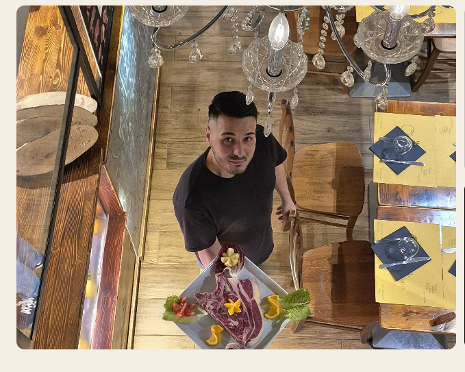
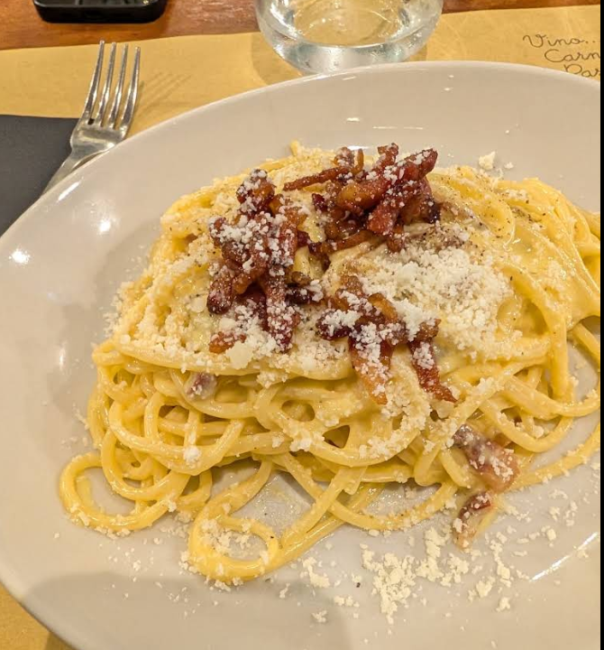
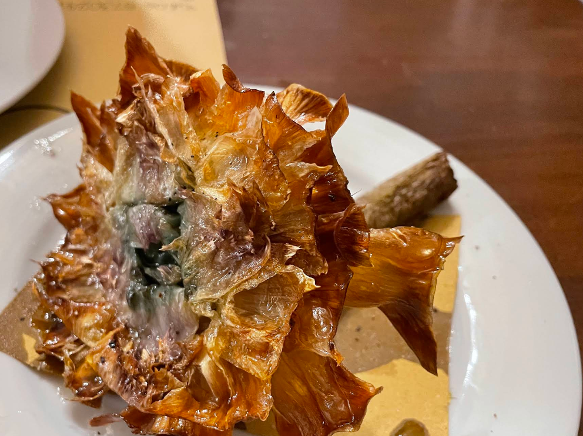
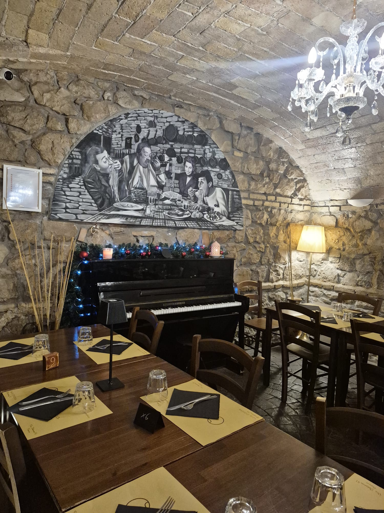

★★★★★
“Cibo squisito e personale davvero carino. Atmosfera autentica nel cuore di Ostiense.”Lisa Saporito
Recensione verificata Google
Cucina verace romana, tagli di carne selezionati e il calore della tradizione nel cuore di Ostiense.
Nel cuore di Ostiense, Osteria Quarantuno è l’incontro autentico tra le ricette capitoline più amate e una rigorosa selezione di carni frollate alla brace. Dalla cremosità della Carbonara alla doratura del carciofo alla giudia, ogni piatto porta in tavola l’anima verace di Roma.



Dalle cene intime alle grandi tavolate tra amici, fino a compleanni, lauree e ricorrenze. Le nostre sale caratteristiche con pareti in pietra, archi d’epoca e luci calde accolgono i tuoi eventi speciali con tutta l’ospitalità della cucina romana.
